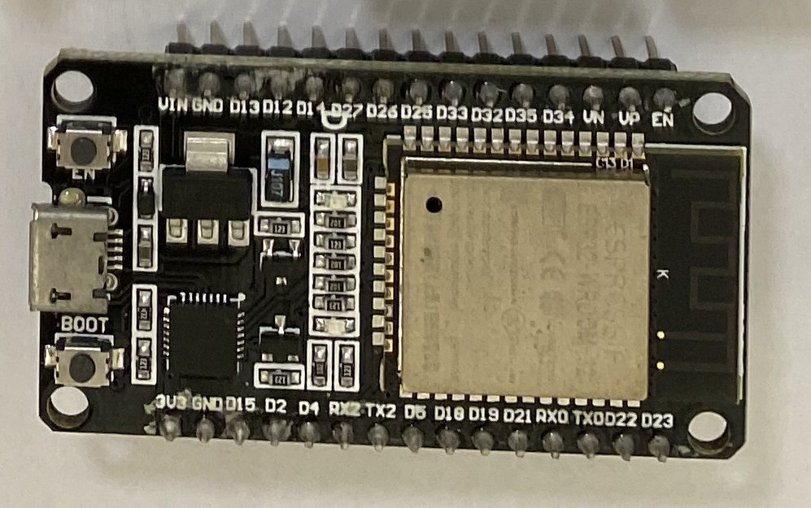

物聯網簡介
物聯網(Internet of Things, IoT)希望能串接所有的事物並能連接上網路，因此它串聯計算設備、機器與對象(包含有生命或無生命)，同時不一定需要人與人或人與電腦互動就可以將訊息傳遞至網路。
物聯網的目的是進行資料的傳送與收集，藉由分析這些資料，可以創造對應的應用。物聯網應用涵蓋各個層面，取決於應用對象，個人應用包含智慧家庭(燈光、溫濕度、監視等)、智慧衣、智慧穿戴式等。企業應用涵蓋智慧城市(公車到站系統、交通監測、公共設施監測等)、智慧醫療、智慧製造、智慧交通等。
物聯網的架構基本包含4個層面(如下圖)：
- 感知/執行：透過各種感測器感知真實世界的各項資訊並執行真實世界設定動作(如開關燈、音量調整等)。
- 傳送：將感知資料透過有線與無線方式(藍芽、WiFi、Lora、MQTT)等將感知資訊傳遞至資料處理與決策或接收資料處理與決策訊息。
- 處理與決策：，這個部分一般我們稱為物聯網的邊緣(edge)，邊緣用於感知資訊前處理，一般常見的邊緣設備包含樹梅派、Arduino、ESP8266、ESP32等。
- 儲存：這個部分用於感知資料深度學習並提供先前層面回饋。
課程將著重於前3個層面的介紹與實作，希望透過課程介紹，同學能實作物聯感知、感知資訊傳送及處理與決策。
開發版
市面上物聯網的開發粄琳瑯滿目，較為大家所熟知包含樹莓派、Arduino、ESP8266與ESP32。

每一種開發版功能與價格皆不相同，開發者應依照其專案所需功能與價格來尋找合適的開發版，課程選擇ESP32(NodeMCU-32s)，因為它除了價格適中(2百多元)，它同時整合WiFi與藍芽、雙核、3.3V與5V輸出。
軟體安裝
軟體安裝包含USB晶片驅動程式(CP210x)與整合性開發環境(IDE)安裝。
-
USB晶片驅動程式需要使用解壓縮軟體，如果電腦沒有安裝解壓縮軟體，請至7-zip下載64位元X64版本，下載完畢，點選下載程式並選擇下一步(Next)來完成安裝。安裝完解壓縮軟體，請至Silicon Labs官網點選DOWNLOADS並下載最新版本
CP210x Universal Windows Driver(作業系統如果為Windows 7請下載 CP210x Windows Drivers)，下載完畢，請選擇下載檔案並按下滑鼠右鍵，選擇7-ZIP - 解壓縮至CP210x_Universal_Windows_Driver進行解壓縮，之後進入CP210x_Universal_Windows_Driver檔案夾，執行CP210xVCPInstaller_x64檔案進行安裝，安裝過程請選擇下一步來完成安裝。 -
安裝完驅動程式後，接下來安裝整合性開發環境(IDE)軟體，所謂的整合性開發環境是希望將程式編輯、執行與除錯都整合在一起，開發物聯網程式工具有許多選擇，為了能有較好執行效能，課程選擇Arduino IDE與C語言。請至Arduino IDE官網下載如橘色框標示Windows Win 7 and newer版本(如下圖)，點選後請選擇 JUST DOWNLOAD。
下載完畢後，請點選下載程式並執行安裝，安裝過程如下三圖片，完成後請選擇 Close：
安裝Arduino IDE後，請開啟Arduino IDE，進行開發版定。
請注意：不同的開發版一定要先進行開發版設定，載入對應程式庫後，才能使用。請選擇Arduino IDE檔案-偏好設定，並在 額外的開發版管理員網址中 貼上https://dl.espressif.com/dl/package_esp32_index.json(如下圖)後選確定。接下來點選
工具/開發板/開發板管理員，會出現開發板管理員視窗，在開發板管理員類型視窗中，輸入關鍵字ESP32後，即可篩選出ESP32核心套件，目前（2021/09月）最新版本為1.0.6，直接點選右側的安裝按鈕，並等候5~10分鐘讓系統下載核心套件並完成安裝，最後再關閉開發板管理員視窗。安裝完畢如下圖。最後請點選
工具/開發板，並往下拉即可在下方找到最新的ESP32系列主板，接下來選擇NodeMCU-32S即可如下圖。
系統測試
請將開發版(NodeMCU-32s)裝載麵包版上並接上Micro USB線，之後將Micro USB線接上已安裝Arduino IDE電腦後，點選鍵盤 Windows符號 及 X 後選擇 裝置管理員/連接埠(COM與LPT) ，請記住開發版連接埠位置(以下圖為例COM3)。
請開啟
請確定